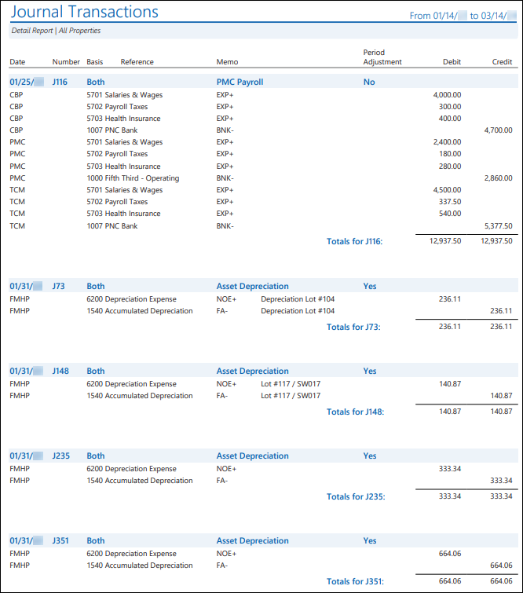
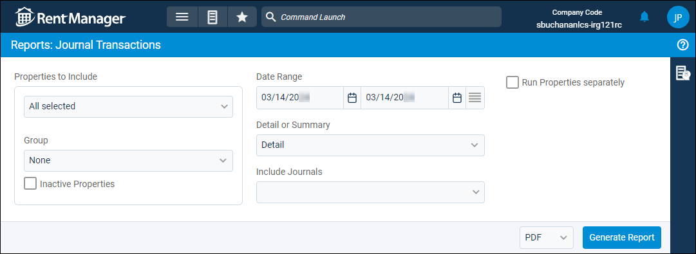

Source: https://rmxhelp.rentmanager.com/Topics/Express/Other/Reports/Journal-Transactions.htm
Journal Transactions (Report)
The Journal Transactions report displays the debit and credit adjustments of journal entries that were entered over a selected date range.
More Information
The GL start date is considered the financial start date, so any transactions or information dated before the GL start date are not included in the report results.
Related Privileges
| Group | Privilege | Column |
|---|---|---|
| Letter/Email Templates/Reports/Packets | Run reports | Enabled |
| Run accounting reports | Enabled |
Additionally, on the Reports tab, you must have access to Journal Transactions.
For more information, refer to Control User Access.
To view the Journal Transactions report, do the following:
-
Go to
 arrow_forward General Ledger arrow_forward General arrow_forward Journal Transactions.
arrow_forward General Ledger arrow_forward General arrow_forward Journal Transactions.
The Reports: Journal Transactions page displays. -
Adjust the report options as desired. Each option is described below.
-
Generate the report in your desired file format(s).
Related Preferences
Reports may look different depending on whether or not the Use modernized report style system preference is enabled. For more information, refer to General Report Options (System Preferences).

Report Options
The report options described below determine what data displays in the report.

Properties to Include
Select each property or a property Group to be included in the report.
More Information
This field populates only with the properties to which you have access. Your access to properties can be managed from your user account or on the property's details page. For more information, refer to Limit Access to a Property.
Optionally, check Show Inactive Properties to include properties that are no longer active.
Date Range
Enter or select the date range to determine the data that displays in the report.
In the Date Range section, set the From and To dates for which the report should examine data.
These fields automatically populate with today’s date. Enter a different date or select a date from the calendar. Alternatively, adjust the dates using the available preset buttons or click  to open more options for setting a date range.
to open more options for setting a date range.
Detail or Summary
This option determines how much information is displayed in the report.
| Option | Description |
|---|---|
|
Detail |
Displays a line item for each credit and debit in each journal entry. |
|
Summary |
Displays the total amount of each journal entry. |
Include Journals
Check any combination of the following options to determine which journals display in the report results.
| Option | Description |
|---|---|
|
Accrual |
Include journal entries entered only on an Accrual basis. |
|
Cash |
Include journal entries entered only on a Cash basis. |
|
Both |
Include journal entries entered on Both a cash and accrual basis. |
Run Properties Separately
Check to generate a separate report for each selected property. Otherwise, all selected properties are combined into a single report.
Report Results
The report results are described below including, if applicable, section, column, and subreport or tab descriptions.
Report Header
The report header displays the report name and key information selected in the report options, such as date information and which properties were examined in the report.
Column Descriptions
The report generates with different columns depending on the report options selection in the Detail or Summary section. Click the report option to view the relevant column descriptions.
Detail
If the report option for Detail is checked, the following columns display. All information comes from the fields on Journal details window of each journal entry.
| Column | Description |
|---|---|
|
Date |
The date on which this journal entry takes effect. |
|
Number |
The system-generated number of the journal entry. |
|
Basis |
The accounting method (Cash, Accrual, or Both) for how the journal entry affects financial reports. |
|
Reference |
A short note to identify the purpose of the journal entry. |
|
Memo |
A longer note to provide further information about the purpose of the journal entry transaction (e.g., Security Deposit Transfer). |
|
Period Adjustment |
If the journal entry is a Period Adjustment, Yes displays. Otherwise, displays No. |
|
Debit |
The amount that was debited for each general ledger account line item included in the journal entry. |
|
Credit |
The amount that was credited for each general ledger account line item included in the journal entry. |
Summary
If the report option for Summary is checked, the following columns display. All information comes from the fields on Journal details window of each journal entry.
| Column | Description |
|---|---|
|
Date |
The date on which this journal entry takes effect. |
|
Number |
The system-generated number of the journal entry. |
|
Basis |
The accounting method (Cash, Accrual, or Both) for how the journal entry affects financial reports. |
|
Memo |
A short note to identify the purpose of the journal entry. |
|
Property |
The Short Name of the property impacted by the journal entry. If multiple properties were impacted, -Split- displays. |
|
Period Adjustment |
If the journal entry is a Period Adjustment, Yes displays. Otherwise, displays No. |
|
Debit Account |
The general ledger account that was debited by the journal entry. If multiple general ledger accounts were debited, -Split- displays. |
|
Credit Account |
The general ledger account that was credited by the journal entry. If multiple general ledger accounts were credited, -Split- displays. |
|
Amount |
The total amount that was both credited and debited in the journal entry. |